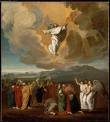

初めに言葉ありき

ビッグスプラッシュ？
毎年12月になると、1年の最大のお祝いであるクリスマスが楽しみになり始めます！ お店はどこも明かりとピカピカの飾りで輝いており（年々早まるように思います）、家の周りにイルミネーションを付け、木を飾ります。街の多くは、立ち並ぶビルを彩るイルミネーションの点滅で通りが華やかになります。そして、中でも最大のお楽しみは？そう、プレゼントです！何がもらえるんだろう？ずっと欲しいと思っていたものかな？ 12月25日が待ち遠しい！

非常に地味な誕生
それで、2000年前にそんな風に事が起こったのです ね？人々は期待して待っていましたか？彼らは、イエスの誕生を期待して家を完璧に飾っていましたか？ この待望の誕生を見込んで、お互いにプレゼントを買ったのでしょうか？イエスが生まれたとき、救い主がついに現れたと世界中に告げられましたか？
いいえ、まったく

イエスがダビデの町とも呼ばれる（覚えていますか？）ベツレヘムで生まれたとき、そのことを実際に知っていたのは、ほんの一握りの人々だけでした。その場にいたのは、イエスの母マリアと婚約者のヨセフでした。マリアとヨセフが滞在していた宿屋の馬小屋を所有していた人達は、おそらく女性が出産したことを知っていたでしょうが、そこには彼らにとって特別な意味はありませんでした。
しかし、天には大きな喜びがありました。ルカの福音書第2章8-14節には、イエスの誕生の夜に大勢の天使が羊飼いのもとに現れたとあることから、そのことがうかがえます。天使は、イエスという男の子が生まれたことを告げただけでなく、実際、彼はユダヤ人が長い間待っていた救世主であると宣言しました！
しかし、他の誰かがそれを知るのには、さらに30年かかるでしょう。
4人の4つの物語

イエスの死、復活、天国への昇天に続く数年で、4人の異なる男性がイエスの人生について書こうと思い立ちました。新約聖書の最初の4冊の書は、これらの伝記（一般に福音書と呼ばれています）を書いた人たちにちなんで名付けられました：マタイ、マルコ、ルカ、ヨハネです。
彼らは互いに話し合ったわけではありません。自分以外の誰かがイエスの物語を書いていることを知らなかった可能性があります。マタイ、ルカ、ヨハネはおそらくマルコの福音書を読んでいたと思われます。研究者は、マルコの福音書が最初のイエスの伝記だったとしていま す。ただし、4冊の福音書は互いに個別に書かれたも のです。

人が出来事について話をするとき、通常、自分が最も重要だと考える部分を語ろうとします。マタイ、マルコ、ルカ、ヨハネの場合がそれです。一部には他の人のにはない出来事やストーリーが含まれています。若干異なる順序で伝えられている出来事もあります。
たとえば、マタイとルカだけがイエスの誕生の物語を書いています。おそらく、ルカの心の中では、イエスが処女の女性から生まれたことを知ることが重要だったのでしょう。マリアの婚約者であるヨセフは、イエスの父ではありませんでした。イエスは神の子だったのです。（ルカの福音書 1:26-38）
マタイの福音書は、イエスの家系図から始まります。その昔、神がアブラハムに、彼の子孫から出る王を通して世界が祝福される、と約束したことを覚えていますか（創世記12:3）？ マタイは、イエスがダビデ王（アブラハムの直系の子孫）の直系の子孫であることを示すように配慮しています。イエスはそのかつての預言が成就したものでした。
マルコとヨハネの場合、イエスについて書いているとき当たり前のように、彼らが誰のことを語っているかは明らかだ、と考えていたと思われます。その時代、イエスは非常に有名人でしたから。ですから、マルコとヨハネは、イエスが地上での宣教を始めたとき、つまりイエスがおよそ30歳の頃から話を始めています。
予期せぬメシア

イスラエルがアッシリアとバビロンに落ちると予言した預言者について知ったとき、同じ預言者がダビデ王の家系から王、メシア、救い主が出ると予言していたことも知りました。これら預言は、イスラエルが再び偉大な国家となり、王がイスラエルの敵すべてを征服し、世界を支配する超大国にする、という希望をユダヤ人に与えました。
しかし、ユダヤ人は預言をすべて読んでいませんでした。または、読んでいたとしても、その中のいくつかを大いに誤解していました。預言者は、神が送るメシアについて二つの説明をしました。一つは確かに、強力な支配者になるということでした。ユダヤ人が理解していなかったのは、この王が最も目立たない場所からやって来て、しかも鳴り物入りで登場するのではない（名もないベツレヘムの静かな夜を覚えていますか？）ということです。この新しい王は、王様の栄光と力ではなく、嘆き、悲しみ、痛みを知っている王となるべく人なのです。
敗北し士気を失ったユダヤ人は、イエスのような謙虚なメシアを求めてはいませんでした。彼らが必要としていたのはそれよりもはるかに華々しい王でした。
そんなわけで、イエスが登場してユダヤ人と共に暮らしていても、彼らはイエスを見た時にメシアだと気付かなかったということです。

イエスの教え
イエスは別の国の支配下にあった場所で育ったことを思い出してください。その頃、その地を支配していたのは強大なローマ帝国でした。イエスは非常にシンプルな社会で育ちました。ユダヤ人は信心深く、隣近所に住んでいたのは農夫、漁師、商人でした（母親の夫であるジョセフは大工でした）。
おそらくこのために、イエスは、しばしば寓話と呼ばれる物語を語ることによって真理を説こうとしました。
そういった話は人々になじみがあり、理解しやすかったからです。

- 畑に種を蒔く農夫（マタイによる福音書13:2-23）
- 両親に反抗するが、自分の罪を深く反省し、両親のもとに戻ってくる息子（ルカによる福音書15:11-32）
- 両親に反抗するが、自分の罪を深く反省し、両親のもとに戻ってくる息子（ルカによる福音書15:11-32）

パリサイ人
イエスの時代には、司祭（聖書ではパリサイ人とも呼んでいます。「分離した者」という意味）がユダヤ人の日常生活を支配していました。祭司は、神がその役割のために特別に選んだイスラエルの12部族の一つの出身で、レビ人（レビの部族の者）でした。彼らは、ユダヤ人が過去のようにさまようことのないようにするのが自分達の仕事だと考えていました。また、人々のために聖書を読んで解釈するのが仕事だとも考えていました。（神は聖書を皆のためのものだとしている、と以前にお話ししたことを覚えていますか？）
イエスはレビ部族ではなかったので、祭司ではありませんでした。

当時、ラビと呼ばれる聖書の真理と知識を伝える教師になるためには、律法学者になるための特別な学校で長期間の教練を受けなければなりませんでした。
イエスはラビの学校に行っていなかったので、保守的なパリサイ派の人は彼が教師として「資格がある」とは考えませんでした。
ですから、宣教のごく初めの頃から、イエスは宗教的支配者と対立していました。イエスの教えを聞くために大勢の人が集まりました。「山上の説教」と呼ばれる彼の最も有名な一連の教え（マタイによる福音書5章とルカによる福音書6章の両方に書かれています）では、彼が説いた内容がことごとく、パリサイ人が人々に信じさせるものに反していました。
イエスが信者たちに学んでほしいと思った主な考えは次のようなものです。
- 神は人々を愛し、お返しに彼を愛してほしいと願っています。神への愛を示す一つの方法は、律法の手紙だけでなく精神にも従うことです。それで、イエスは彼の信者に、正直であるだけでなく慈悲深く親切で公正であるようにと告げました。
- イエスは、信者が愛することを学んで欲しいと思っていました。仲間の信者を愛すること、敵ですら愛すること。神は私たちの罪を赦すとおっしゃいました。神は私たちにお互いを許してほしいと願っています。
イエスが信者に知ってほしかった最も重要なことは、イエスが神の子であり、罪からの救いは彼を通してのみ達成できるということでした。聖書の中で最も有名な節の一つでは、神が人類と交わした「新しい契約」について宣言しています（ヨハネによる福音書3:16）。
神は彼の独り子を与えるほどに、世界を愛 しておられた。独り子を信じる者がだれも 滅びず、永遠の命を得ることを願っておられたのだ。
イエスからのこの宣言は2つの理由で異常と言えるものでした。第一に、イエスが神の子であるという考えは多くのユダヤ人に受け入れられませんでした。どうして単なる人間が神なのか？イエスの時代の宗教指導者が受け入れられなかったという2番目の考えは、救いはもはやユダヤ人だけに留まるものではないというものでした。イエスは、彼を信じる者は誰でも神の王国に属することができると言われました（ヨハネによる福音書1:12）。
サドカイ人
イエスの時代に住んでいたユダヤ人の傑出した、多くの場合裕福な一派であるサドカイ人は、ローマ人とある種の政治的取り決めをしており、ある程度の政治的な権力を享受していました。サドカイ人は、仲間のユダヤ人からローマへの税金を徴収する仕事をすることがありましたが、往々にしてその仕事に対して不誠実で、実際に課されているよりも多くを支払うことを要求しました。そうして一部をちょろまかしていたのです。ユダヤ人の多くは、サドカイ人を裏切り者だと考えていました。憎むべきローマ人と仲良くしていたためです。
ユダヤ人の間ではしばしば反乱の話がありました。過酷なローマの支配にうんざりしていたのです。サドカイ人は、ユダヤ人とローマ人の間の平和を保つことが彼らの仕事であると考えました。ユダヤ人がローマ人と問題を起こさないことが、誰にとってもよいことだ、とサドカイ人は考えました。

イエスの試練
これまで見てきたように、イエスは大勢の人々 に、神とその愛についての良いたよりを説き、それを広めました。パリサイ人は、これが実に気に入りませんでした。彼らは、ユダヤ人の中で唯一の宗教的権威になりたかったのです。イエスは人々に、聖職者がこれまでやってきたよりも霊的な事柄についてより深く考えるように教えました。そして、人々はイエスのそのような教えを支持しました。

サドカイ人は、イエスの信者となった群衆も好ましく思っていませんでした。大勢の人を統制することは簡単ではありませんでした。イエスが、ローマに対する反乱を企て、信者がそれに従うことを望んだならば、それを防ぐ手立てはあるのだろうか？
サドカイ人は、大勢のユダヤ人群衆でさえローマ軍の力に匹敵しないことを知っていました。ローマ人がユダヤ人の反乱を鎮圧するとしたら、壊滅させてしまうだろう（イエスの死後35年に、それは実際にローマ人が行ったことでした）、と。彼らの政治的な力はローマ人にはもはや何の意味もなくなるでしょう。また、サドカイ人はイエスのような民衆を煽り立てる、取るに足らない男のために権力を失うつもりはありませんでした！

しかし、イエスが行った最悪なことは、彼が本当に神の御子であると人々に宣言したことでした。イエスは、自分こそが皆が長い間待ち望んでいたメシアであると告げました。パリサイ人にとって、これは神への冒涜（神に対する最大の無礼）でした！ユダヤ法の下では、それは死刑に値する罪でした。
何度も、イエスは彼がメシアであるという主張を裏付ける奇跡を起こしました：病人を癒し、盲人を見えるようにし、足の不自由な人を再び歩かせました。死んだ人も生き返らせました！
イエスは、パリサイ人（人々に彼らの権威に対する疑念を起こさせたため）とサドカイ人（彼らの権力を脅かすかもしれないため）の両方に対する脅威とみなされました。
パリサイ人とサドカイ人は通常お互いに友好的でも協力的でもありませんでしたが、ここで共通の敵が登場しました。イエスです。

ある夜、イエスが祈っていたとき、イエスの最も親しい 友人（彼の12人の弟子）の一人であるイスカリオテのユダが、イエスが祈りによく使っていた場所、ゲッセマネの園へパリサイ人とサドカイ人の一団を連れてきました。イエスは罪を犯していないことを知っていたにもかかわらず、逮捕に抵抗しませんでした。
ある夜、イエスが祈っていたとき、イエスの最も親しい 友人（彼の12人の弟子）の一人であるイスカリオテのユダが、イエスが祈りによく使っていた場所、ゲッセマネの園へパリサイ人とサドカイ人の一団を連れてきました。イエスは罪を犯していないことを知っていたにもかかわらず、逮捕に抵抗しませんでした。

イエスは大祭司の前に立って、「私がメシアである。あなたがたは私が神の右に座しているのを見るであろう」と言いました。（マルコによる福音書14:62）
イエスに関する「証拠」を与えるために偽の証人が集められていましたが、カヤパはイエスの声明だけが罪の自白であると判断しました。彼の評決は、イエスを死刑にすることでした。
ユダヤ人は、ローマ総督ピラトの許可なしに死刑を執行できませんでした。司祭たちはイエスをピラトの前に連行し、イエスが反逆罪を犯したと告げました。
自分をメシアだと宣言することは、ユダヤ人の王だと宣言することに等しい、と彼らは主張しました。ローマ法の下では、カエサル以外は誰も自分を王と呼ぶことはできなかったのです。
ピラトは、イエスが王であると真剣に主張しているとは実は思っていませんでした。イエスは裁判を受けながら、自分を弁護することさえしなかったからです。しかし、ユダヤ人の司祭たちは、イエスを死刑にすべきだと主張していました。ピラトが有罪判決を受けた殺人者バラバを釈放するか、イエスを釈放するかの選択肢を彼らに提示したときでさえ、皆イエスの死刑を叫びました。（マルコによる福音書15:6-13）

イエスの死と復活
磔は、ローマでは一般的な死刑の一形態です。それは最も恥ずべき死に方でした。イエスは通常、腰布を身に着けているように描かれていますが、実際には衣服を剥ぎ取られたので、見物人の前で全裸でした。ローマ人は最悪の犯罪者を磔にしていたため、磔になる者は、特に辱めを受けていたのです。
最初にユダヤ人の告発者によって、次にローマの警備員によって一晩打たれた後、イエスは磔にされる場所に自分の十字架を運ばされました。打たれたことで弱っていたイエスは、十字架の重みに耐えることができませんでした。道を通りかかった奴隷が、イエスに代わって彼の十字架を運ばせられました。
処刑の場所に到着すると、ローマの警備員はイエスを十字架に釘付けにしました。そこに彼を連れてきた兵士たちは、彼からはぎ取った服を賭けの賞品に使いました。
十字架で死ぬのには通常数日間の激しい苦しみがありましたが、イエスの傷とその前夜からの出血が恐らく彼の死を早めたのでしょう。彼は十字架にかけられた同じ日に亡くなりました

イエスがゲッセマネの園で逮捕されたとき、友人のほとんどが彼を見捨てました。友人の中にアリマテアのヨセフという名前の人がいました。彼はピラトのところに行き、イエスの亡骸を渡してくれるよう頼みました。きちんと埋葬したいと思ったのです。
彼はイエスの体を亜麻布で包み、岩に彫られた墓に納めました。そして、大きな石を入り口に転がして立ち去りました。
イエスは弟子たちに、人類の罪の最後の犠牲として死ななければならないと何度も言われましたが、 誰もそのことを理解していませんでした。
イエスの友人達は、もし彼が神の子であるならば、神が約束されたメシアであるならば、死ぬことなどできないはずだ、と考えていました。
イエスが亡くなってから3日目に、彼の友人であった女性が数人、彼の墓に参りました。ユダヤ人には、埋葬のためにある種のスパイスを体に塗る習慣がありました。道すがら彼女達は、墓の前に転がっている石をどうやって動かせばいいだろうと考えました。

女性たちが到着したとき、石がすでに動かされており、墓が空だったことに驚きました！
すると、イエスの亡骸があった地面に座っていた天使 が、彼女らに言いました。「怖がることはありません。イエスは彼が言ったように、死からよみがえったのです！」天使は女性たちに、友達のところに戻り、イエスが死からよみがえったという吉報を伝えるように言いました。（マルコによる福音書16:6-7）
ユダヤ人がエジプトで奴隷制からの解放を記念して毎年過ぎ越しを祝うように、イエスの信者は復活祭の日曜日を歴史上最も輝かしい出来事として祝います。イエスは人類を支配する死の力を克服し、いかなる時にも我々の罪への赦しを与えんがため、死の淵から立ち上がった、と。
当然、イエスが墓にいないと聞いたとき、友人達はそれを信じることができませんでした。
しかし、イエスは復活後、残っている11人の弟子たちの前に何度か現れまし た。彼は多くの預言をいかに成就したかについて、時間をかけて話をし、イエスがはりつけの前に彼らに伝えようとした真理のすべてをついに理解したのです。（ルカによる福音書24:27）
イエスは天へ
イエスは、復活後40日間にわたって弟子たちの前に現れ続けました。食事を共にしていた時、イエスは、約束された聖霊の贈り物を受け取るまでエルサレムを離れないようにと彼らに言いました。（ヨハネによる福音書14:16）
イエスが彼らの前に最後に現れたとき、弟子たちは彼がイスラエルに以前の栄光を取り戻そうとしているかどうか尋ねました。イエスは、父なる神だけがその ような質問に対する答えをご存知である、と答えま した。（使徒言行録1:7）
そして、弟子たち全員がイエスと共にそこに立っていると、イエスは彼らから離れて空へと昇り始めました。弟子たちは、イエスが見えなくなるまで見つめていました。イエスは父のもとへと天に昇っていきましたが、物語はそこで終わりませんでした。実は、物語はまだ始まったばかりなのです！